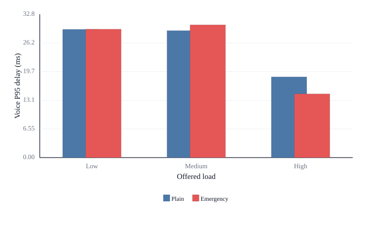
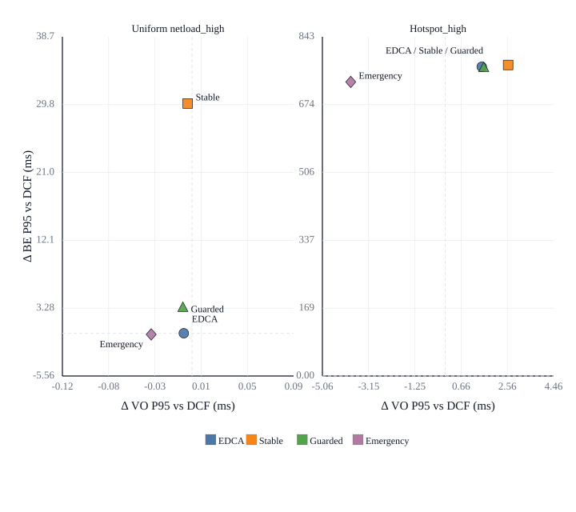
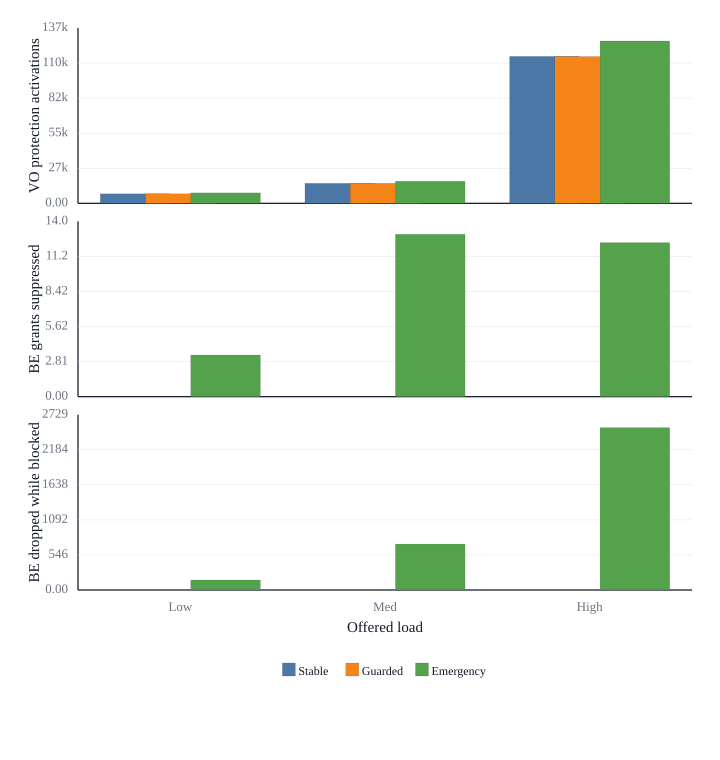

EvaluationUniform vs. concentrated load; protection vs. cost
ConclusionFindings, implications, limits, future work
MotivationA crash on the highway
CRASH ALERT (Voice)
routine traffic from every vehicle (Best Effort)
Vehicles behind often cannot see the hazard, because traffic or road geometry hides it. A V2X warning sent by the crashed vehicle can reach them before the hazard becomes visible.
The alert is rare, but it is only useful if it arrives on time, and it is sent when the channel is busiest.
ETSI EN 302 637-3 (DENM): road-hazard warnings are sent by the vehicle that detects the event.
How fast is "on time"?3GPP TS 22.186: platooning requirements
Degree of automation
Req.
Payload (B)
Rate (msg/s)
Max latency
Reliability
Min range
Lowest
[R.5.2-004]
300–400
30
25 ms
90 %
—
Low
[R.5.2-005]
6500
50
20 ms
—
350 m
Highest
[R.5.2-006]
50–1200
30
10 ms
99.99 %
80 m
High
[R.5.2-007]
—
—
20 ms
—
180 m
25 ms end-to-end is a conservative, widely cited reference bound, not the strictest row.
These are application-layer, end-to-end targets. They give the order of magnitude for reading MAC-level tails; they are not a MAC pass/fail test.
3GPP TS 22.186, Table 5.2-1 (information exchange within the platoon; 130 km/h). TS 22.261 defers concrete V2X KPIs to TS 22.186.
Access technologyWhy IEEE 802.11p?
Warnings must work wherever vehicles meet, including road sections without roadside units or cellular coverage.
✕
Wired / TSN
Can bound delay, but cannot connect moving vehicles.
✕
Cellular via base station
Depends on coverage; every message goes through the infrastructure.
~
NR-V2X sidelink (Mode 2)
Direct exchange, but uses sensing + semi-persistent scheduling: a different radio technology.
✓
IEEE 802.11p / 11bd
Direct exchange, no infrastructure, no synchronization. 5.9 GHz, 10 MHz; access layer of ITS-G5.
But 802.11p (and its successor 802.11bd) keep fully distributed, contention-based access: there is no central scheduler that can reserve transmissions for urgent traffic.
The problemThe alert waits behind routine frames
Neighbors (BE)
BE
BE
BE
BE
Crash alert (VO)
▼ alert ready
DIFS
4
frozen
DIFS
3
frozen
DIFS
2
1
ALERT TX
access delay grows with the surrounding load
As load rises, delay and jitter become unstable; the alert's backoff freezes every time someone else transmits.
QoS markings are not handled consistently across deployments.
Every millisecond of waiting takes reaction time away from the following vehicles.
RFC 8325; Wu et al. (continuous backoff freezing in 802.11p).
Existing tools and the gapStandard mechanisms exist, but they are not enough
Network layer: DSCP 46 (EF)
The Expedited Forwarding codepoint marks the most delay-sensitive traffic.
✕ The DSCP→802.11 mapping is a local policy, and the defaults are ambiguous.
Link layer: EDCA
Four access categories (BK, BE, VI, VO); Voice gets the most favorable contention parameters.
✕ It gives statistical preference, not guarantees, and urgent traffic gains only at others' expense.
…but they need synchronization, infrastructure or richer protocol machinery, which is hard to provide in a decentralized VANET.
The gap
A local, event-driven design that isolates one crash-triggered flow against background traffic, and measures both the protection and the penalty.
Standard 802.11p only, so it is deployable per node.
This workA focused crash-aware prioritization strategy
All vehicles
Periodic Best Effort multicast, DSCP 0, throughout the scenario.
One crash vehicle
Temporary alert bursts, DSCP 46, explicitly mapped to Voice, superimposed on its own BE.
Simulated
OMNeT++ + INET network stack, coupled to SUMO road traffic through Veins.
Five MAC policies, built from standard mechanisms
plain DCF baselineno differentiation
edca_only EDCA + DSCP 46→VOstandard QoS
stable long protection windowshold BE
guarded short, tight windowshold BE
emergency aggressive activationhold + drop BE
Adaptive profiles = fixed design points on a protection-versus-cost frontier. The goal is better statistical latency under congestion, not deterministic guarantees.
ObjectivesWhat the dissertation sets out to do
Main objective. Evaluate, through simulation, whether crash-triggered Voice traffic can get measurably better wireless service than ordinary Best Effort in decentralized vehicular Wi-Fi, using only local, standard-compliant MAC mechanisms, and quantify the cost to ordinary traffic.
1 · Traffic model
Crash-triggered two-class model in Veins/INET: BE multicast everywhere + DSCP 46 alert bursts mapped to VO by an explicit classifier.
2 · Adaptive controller
Lightweight local three-mode extension of EDCA, exposed as a ladder of five policies, from DCF to emergency preemption.
3 · Evaluation matrix
10 / 100 vehicles × offered-load profiles × spatial concentration (uniform vs. hotspot); delay, jitter, reach, MAC loss.
4 · Engineering guidance
Characterize the protection-versus-cost frontier and say when suppression should be enabled.
Scope: one crash source, two classes, one-hop multicast on a highway, no APs/RSUs/central coordination, no full ITS stack, no deterministic bounds claimed.
ContributionsThree contributions
1
Adaptive MAC controller
Built solely from standard mechanisms: explicit DSCP 46→Voice mapping plus a local three-mode EDCA extension, applied to a crash-triggered two-class model.
2
Open-source artifact
Veins/INET simulation comparing DCF, EDCA and three adaptive profiles across density and load matrices.
github.com/GOAguiar99/veins-inet-qos
3
When to enable suppression
A protection-versus-cost frontier that depends on how the load is distributed: no Voice gain under uniform load; real gain under concentrated near-crash contention.
Background · IEEE 802.11 DCFCSMA/CA with binary exponential backoff
Station A
DIFS
5
4
frozen at 3
DIFS
3
2
1
A transmits
Station B
DIFS
2
1
B transmits
Medium
busy
busy
busy
Medium idle for a DIFS → transmit; otherwise draw backoff uniformly from [0, W−1].
Countdown only while idle; frozen while the medium is busy.
Unicast: no ACK → CW doubles (CWmin → CWmax). Group-addressed frames have no ACK, so this never happens for them.
Freezing is not an anomaly. It is part of baseline DCF and dominates access delay when the channel is repeatedly busy.
Every station with the same CW has the same priority: DCF gives no QoS differentiation. This is the plain baseline.
Bianchi (2000); IEEE 802.11; Wu et al.
Background · Saturation analysisWhat Bianchi's model tells us
2-D Markov chain over (backoff stage, counter) with a constant collision probability p → per-slot transmission probability τ → saturation throughput.
①
A capacity ceiling
Saturation throughput is the maximum stable load; past it, queues and delay grow without bound.
②
More stations, worse
Under Basic Access, which is the only mode for short and group-addressed frames (no RTS/CTS), collisions waste long intervals.
③
Fixed parameters
The best CW depends on network size, but CWmin and m are fixed, so throughput can be well below the achievable maximum. That motivates adaptive, local control.
Under plain, any BE/VO delay difference comes from the traffic processes (senders, activity window, payload), not from prioritization.
Background · IEEE 802.11e EDCAFour access categories, four backoff entities
AIFS[AC] = SIFS + AIFSN[AC] · slot
AC_BK
AIFSN 7CW 15–1023 · empty in study
AC_BE
AIFSN 3CW 15–1023
AC_VI
2CW 7–15 · empty in study
AC_VO
2CW 3–7wins first ✓
Configured values (INET BSS QoS defaults): AIFSN BK/BE/VI/VO = 7/3/2/2; CWmin–CWmax: BK, BE 15–1023; VI 7–15; VO 3–7. Queues 128/128/64/32.
Each AC: own queue, AIFSN, CWmin, CWmax, optional TXOP.
Smaller AIFSN / CW → higher chance to win contention.
Virtual collision: two local ACs expire together → the higher priority one wins; the loser behaves as if collided.
UP→AC: UP 6,7 → VO; 4,5 → VI; 0,3 → BE; 1,2 → BK.
The edca_only policy, and all adaptive policies inherit exactly these parameters.
IEEE 802.11e; Mangold et al. (2003); Kong et al. (2004); RFC 8325.
Background · Limits of EDCAStatistical priority, without guarantees
EDCA delays “increase unpredictably” with load.Mangold et al. (2003)
EDCA gives “only performance differentiation among the categories”.Kosek-Szott et al. (2012)
Strict priority can drive low-priority flows to “zero-valued throughput”.Malik et al.
Consequence 1
Mapping alerts to AC_VO should help them, but the gain is contingent on the contention regime, never a bound.
Consequence 2
Starving lower-priority traffic is the ordinary cost of prioritization. The adaptive profiles make this cost bounded, event-triggered and measured.
Adaptive EDCA (e.g. Adaptive EDCF) retunes CW/persistence continuously from measurements.
This work keeps EDCA parameters unchanged and only gates who may contend (BE), and only while a crash alert is active.
Background · IEEE 802.11pOCB operation and group-addressed frames
5.9 GHz, 10 MHz OFDM: longer symbols, more robust to multipath/Doppler.
IEEE 1609.4 multichannel (CCH/SCH) is not modeled: one shared channel, PHY fixed across policies.
Group-addressed frames (RFC 9119): no ACK → no retransmission, no loss-driven backoff; often sent at a low basic rate, so they take more airtime. Losses of ≥5 % are not uncommon.
Mechanism
BSS
OCB (here)
Link-layer ACK / retry for group frames
No
No
GCR Retry / Block Ack (802.11aa)
Yes*
No
Directed multicast (AP)
Yes
No
EDCA priority via UP→AC
Yes
Yes
DCC aggregate load control
N/A
Possible (off)
Event-triggered BE suppression
N/A
Evaluated
Background · ITS-G5Decentralized Congestion Control vs. event-triggered suppression
DCC (ETSI)
Always-on, aggregate
Measures the Channel Busy Ratio.
Transmit power / rate / access control.
Keeps each station's total load inside a target region, across all classes.
This work
Event-triggered, per class
Acts only while a crash alert is active.
Discriminates BE vs. VO instead of scaling everything.
Temporarily reshapes who contends.
Complementary: DCC keeps the long-term operating point away from collapse; suppression reshapes contention during a short alert window. DCC is disabled in the evaluation to isolate the five policies, so no superiority claim over DCC is made.
Background · From DSCP to the air interfaceThe Voice mapping is not automatic
Crash alert marked EF (RFC 3246): DSCP 46
101110
RFC 4594: inelastic, low-delay traffic → EF, pre-marked at the source. Crash alerts are not telephony, but they share its traffic profile.
Common heuristic: user priority = the 3 MSBs of the DSCP
DSCP 46101110
→
3 MSB101 = 5
→
UP 5
→
AC_VIVideo ✕
RFC 8325 recommendation (non-default): EF → UP 6
DSCP 46EF
→
explicit mapQosClassifier
→
UP 6
→
AC_VOVoice ✓
No standard defines the default DSCP→UP mapping. The 802.11 tables are examples, not recommendations. BE stays DSCP 0 → UP 0 → AC_BE.
RFC 8325: 802.11 cannot provide an EF PHB, because contention is random. The mapping is necessary, not sufficient, and any node marking high priority can monopolize airtime (a DoS vector).
A crash changes both the traffic pattern and the radio neighborhood, so the network model must control vehicles (stop the crash node) while SUMO keeps feeding mobility back.
PHY is held fixed across policies (free-space, binary obstacles, fixed SNIR threshold), so differences isolate contention and queueing.
Varga (OMNeT++); INET Framework; Sommer, German & Dressler (Veins, 2011); Alvarez Lopez et al. (SUMO, 2018).
Related workDesign-space positioning
Always-on regulation
Adaptive EDCA, DCC: continuous, aggregate.
Stronger coordination
Slots, preemption + arbiter, TDMA, cellular, TSN/OFDMA: need sync or infrastructure.
Contention timing / cost
When traffic contends matters as much as which AC.
Marker positions are qualitative, from each work's stated assumptions.
Related work · Stronger contention controlThey work, but they assume more
Approach
Mechanism
Requires
Relation to this work
TSNCtl (Feraudo et al.)
App-level TSN-like slot schedule + FSM for platoons (2 ms slots ↓ collisions)
Wireless TSN: Time-Aware Shaper schedules for V2X QoS
Sync, gate-control lists
Precursor: TAS and sync dropped here
None isolates the narrow question: can a local, standard EDCA stack, plus explicit DSCP→Voice mapping and short-lived BE suppression, protect a crash multicast burst, and at what cost?
Related work · Other familiesContention dynamics, load regulation, TSN/OFDMA
contention dynamics
Backoff freezing (Wu et al.)
Repeated freezes ⇒ higher access delay; delay and PDR worsen with density. The trend transfers; the absolute numbers do not.
SkipCCH (Garrido Abenza et al.)
Avoids CCH→SCH bursts in 1609.4: when traffic contends matters.
cost of protection
QoS surveys
Protection always has a cost, including low-AC starvation. Reporting only Voice gains is incomplete.
⇒ the protection-vs-cost frontier is a primary result here.
Together they motivate a design that (i) acts when contention is crash-relevant, (ii) reshapes who contends, not just queue mapping, and (iii) reports BE penalties as seriously as Voice gains.
Research gapA local mechanism with four properties
Uses only standard EDCA queues and an explicit DSCP→Voice mapping.
Adds BE suppression only while crash-related Voice activity is present.
Needs no clock synchronization, RSU, UAV or cellular sidelink.
Is evaluated jointly on Voice protection and BE cost, across density and load.
This work
Mechanism
Requires
Target
Advantage
Crash-aware EDCA
DSCP→VO + event-triggered BE suppression
Local OCB EDCA only
Crash VO vs BE multicast
Protection–cost frontier; no sync / infra / sidelink
System model · NetworkDecentralized one-hop multicast on a shared channel
Vehicles exchange frames directly; no AP, RSU or coordinator forwards or allocates.
One-hop multicast: every frame may be received by all vehicles in range. No ACK, no retry.
Connectivity is held fixed across the five policies ⇒ BE/VO differences reflect queueing and contention.
Out of scope: DCC, TSN-style gating, multiple crash sources, >2 classes, deterministic or worst-case latency claims.
System model · TrafficTwo classes: background + crash overlay
every vehicle
Poisson: exponential gap redrawn before every packet · DSCP 0
crash vehicle
▼ logical alert t₀
copy i at max(0, i·gap + U(−J, J))
▼ next alert (period)
Profile
BE (every vehicle)
VO alert (crash vehicle, during window)
low
exp. mean 500 ms, 200 B
every 120 ms, 150 B · 3 copies · gap 20 ms · jitter 5 ms
medium
exp. mean 250 ms, 320 B
every 75 ms, 180 B · 4 copies · gap 15 ms · jitter 5 ms
high
exp. mean 125 ms, 420 B
every 20 ms, 260 B · 8 copies · gap 5 ms · jitter 2 ms
Synthetic on purpose (not CAM/DENM schedules): isolate MAC trade-offs. The alert is superimposed: the crash vehicle keeps sending its own BE. Repetition follows robust-broadcast practice.
System model · QoSFive MAC policies, one comparison ladder
plain
Non-QoS DCF. Single queue, no classifier: every frame treated alike.
edca_only
Standard EDCA. DSCP 46 → AC_VO; everything else UP 0 (BE).
stable
edca_only + adaptive controller with long, sustained protection windows. BE stays queued but cannot access the channel.
guarded
Same controller with tighter, shorter windows (bounded suppression).
emergency
Aggressive activation. Newly arriving BE may be dropped, stale BE grants released.
more aggressive towards Best Effort ⟶
Adaptive profiles (edca_v2x_vo_*) inherit edca_only unchanged and only add the local controller; they shape contention, they do not reserve the medium.
System model · Adaptive controllerThree-mode local FSM
A local finite-state machine gates BE eligibility for channel access. EDCA queue parameters are untouched.
listening: the default. The node runs ordinary EDCA and watches its own Voice queue and the air.
A single overheard Voice frame is enough to start or extend protection. The queue threshold applies only to locally generated Voice.
While blocking: stable/guarded keep BE queued but ineligible; emergency may also drop new BE and release stale BE grants.
The crash node enters sending when its own Voice frame obtains the channel. BE stays blocked.
After the Voice TX ends, or the send-guard timer fires, it returns to blocking while the window is still open.
Once the protection window (plus guard) expires → back to listening. Nodes that only overhear Voice never enter sending.
Extra transitions: a local Voice frame can win the channel directly from listening, and return there if the window is already closed.
The mechanism shapes local contention during the alert period. It does not reserve the medium or open scheduled gates.
System model · EventsThree phases on a 70 s run
1 · Normal (0–30 s)
Only periodic BE multicast; controllers in listening.
2 · Crash window (30–60 s)
Node 0 stops and sends VO bursts; BE continues everywhere, crash node included.
3 · Recovery (60–70 s)
Alerts stop. Protection may briefly outlast the burst, until window + guard expire.
ImplementationArtifact architecture
SUMO
5 km corridor, 3+3 lanes, cars + trucks, 120 km/h; step 0.1 s.
Frameworks = read-only submodules at release commits; only vendored file modified: VeinsInetApplicationBase. Public: github.com/GOAguiar99/veins-inet-qos
ImplementationEnd-to-end packet path
App creates the UDP payload, a CreationTimeTag and a DscpReq of 0 or 46.
Sent to multicast 224.0.0.1 via VeinsInetApplicationBase.
Under EDCA policies, QosClassifier turns DSCP into a user priority.
MAC: one DCF queue (plain) or EDCA ACs; adaptive policies ask the FSM before granting BE access.
Dimensional 802.11p radio; receivers reverse the path.
CritPacketSender classifies RX by DSCP into BE/VO KPIs, skips self, dedups VO repeats.
Implementation · ApplicationsTwo traffic generators and the "alert age" metric
CritPacketSender
Periodic BE on every vehicle (app[0], port 9001).
RX side: BE/VO delay vectors, counts; crash-node BE slice.
VO dedup keyed by (source, sequence), run-long.
CrashBurstApp
Only targetNodeIndex = 0 acts, at crashAt = 30 s.
TraCI setSpeed(0), then DSCP 46 bursts; resumeAfter = 30 s.
repeatCount, repeatGap, repeatJitter; logical and physical TX counters.
Copy i leaves at max(0, i·gap + U(−J, J)): jitter also hits the first copy. Its 95th percentile is 0.9 J, a floor that no MAC policy can remove.
BE delay starts at each physical send; VO delay = alert age: from t₀ to the receiver's first accepted copy. "The alert is only as timely as the application makes it."
Implementation · QoS and MAC modulesClassifier, instrumented MAC, adaptive HCF
Used by all policies. Subscribes to packetDroppedSignal: drops per AC (BK/BE/VI/VO/unclassified) and per reason (overflow, retry, congestion, incorrectly received…).
V2xHcf + FSM
Replaces INET's Hcf (adaptive only). Same EDCA tree + V2xEdcaFsmController. Intercepts BE channel-access eligibility; no backoff arithmetic rewritten, no gates.
Profile
blockDuration
maxContinuousBlock
sendingGuardTimeout
voQueueThreshold
emergencyPreemption
stable
15 ms
80 ms
5 ms
2
false
guarded
4 ms
20 ms
4 ms
3
false
emergency
10 ms
60 ms
5 ms
1
true
Hooks: VO demand (local enqueue ≥ threshold or overheard VO) → onVoDemandDetected extends window by blockDuration, capped by maxContinuousBlock. Counters: beDroppedWhileBlocked, beGrantSuppressedWhileBlocked, voProtectionActivation; vector v2xState (0/1/2).
Implementation · ScenarioParameters and configuration matrix
5 policies × 3 loads = 15 configs per density package <policy>_netload_<low|medium|high>
× 2 densities = 30 named experiments
+ 15 hotspot configs (heavy) <policy>_hotspot_<profile>: nodes 1–3 bulk-upload 1200 B at 4 ms Poisson ≈ 2.4 Mbit/s each
Fidelity caveats:AdhocHost approximates OCB; EDCA set = BSS QoS defaults, while the OCB default gives BE AIFSN 6, so BE here competes harder (conservative). Group frames at 12 Mbit/s instead of a basic rate.
EvaluationHow the evaluation reached its final form
step 1
First uniform campaign
Reported in the SBESC 2026 paper.
step 2 · audit
Two measurement bugs
BE interval drawn once per vehicle → some near-greedy senders.
VO delay clocked from each physical repeat, not alert start.
step 3
Fix, discard, re-run
Poisson redraw per packet; alert-age clock. Earlier traces discarded.
step 4
Null result
Under uniform load the five policies no longer differ in Voice service.
step 5
Why? → hotspot
Hypothesis about diffuse load → a concentrated-load experiment.
The negative result shaped the work: understanding why protection had no effect led to the condition in which it does help. The dissertation supersedes the paper's numbers.
≈ 800 BE pkt/s fleet-wide when all 100 cars are in → ≈ 22 k BE TX per run (progressive injection). VO: 8 copies, 5 ms gap ≈ 400 pkt/s during the window. Genuine Poisson ⇒ no queue overflow; BE P95 sub-ms under DCF/EDCA.
Metrics
Delay (VO = alert age), P95, mean abs. jitter
Reach: VO RX/alert, BE RX/TX (multicast fan-out)
MAC drops per AC (VO-attributed; n.a. under plain; ÷2 parser guard)
Controller: activations, BE drops / holds while blocked
Crash-node BE slice: same-sender comparison
Means over seeds; tails = mean of per-run P95 on pooled receiver samples; min–max range shown. No significance tests → qualitative mechanism checks. Δ vs plain unless noted.
Evaluation · OverviewThe answer depends on how the load is distributed
Voice P95 at high load, 100 vehicles (ms)
25 ms ref.
2.25
2.24
2.25
2.24
2.21
DCFEDCAstab.guard.emer.
Uniform Poisson
18.5
20.0
21.0
20.0
14.6
DCFEDCAstab.guard.emer.
Hotspot near the crash
Uniform
≈ 2.2 ms for every policy. Mostly the generator's jitter floor. Policies differ only in BE cost.
Hotspot, high
DCF/EDCA 18.5–20 ms; emergency 14.6 ms: −39 % mean, −21 % P95 vs DCF; −29 % VO collision losses vs EDCA.
Hotspot, medium/low
No Voice gain: bursts too sparse to keep protection on.
Evaluation · Uniform load, 100 vehicles, highVoice is flat; Best Effort pays
Voice P95 (ms) · linear 0–3
2.249
2.242
2.245
2.241
2.211
DCFEDCAstableguardedemerg.
Best Effort P95 (ms) · log scale
0.51
0.52
30.5
3.9
0.37
DCFEDCAstableguardedemerg.
VO mean, P95 and jitter within tens of µs. EDCA is not better than DCF. VO RX/alert = 9.95 everywhere.
stable ×60 BE P95 (0.51 → 30 ms); guarded → 3.9 ms. Blocking without dropping only adds delay.
VO MAC drops ≈ 3.7 k under every QoS policy; emergency ≈ EDCA. BE overflow = 0. Diffuse contention: nothing for suppression to act on.
Evaluation · Uniform loadLower BE delay is not better BE service
Delay is measured on delivered packets. Emergency drops BE while blocked, which removes the slow tail from the sample. The cost shows up as lost reach.
8.06
BE RX/TX · DCF
→
6.93
BE RX/TX · emergency
Crash-node BE P95 at high load: DCF 0.63 · EDCA 0.77 · stable 13.8 · guarded 3.9 · emergency 0.44 ms.
Light density (10 vehicles), high load
Policy
Δ VO mean
Δ VO P95
BE P95 (ms)
plain
—
—
0.44
EDCA
+1.3 %
−0.0 %
0.42
stable
+0.9 %
+0.5 %
49
guarded
−1.3 %
−1.3 %
9.0
emergency
+2.4 %
+0.2 %
0.37
Plain: VO mean 0.786 ms, VO P95 2.078 ms.
Same pattern with few vehicles: protection windows open even with little stress, and blocking without dropping already harms BE.
Evaluation · Why ≈ 2.2 ms?The floor comes from the alert generator
High load, J = 2 ms
jitter P95 ≈ 1.8 ms
~0.4
= observed VO P95 ≈ 2.2 ms (sub-ms transfer on top)
Low/medium, J = 5 ms
0.9 · 5 = 4.5 ms → observed floors ≈ 4.6–4.9 ms
Mean: E[max(0, U(−2, 2))] = 0.5 ms = half of the 0.99 ms VO mean. A missed first copy adds one gap per miss, which is rare at P95 under diffuse load.
2.2 ms is not a pure medium-access measurement, and no MAC policy could have changed it.
Evaluation · From null result to hypothesisWhy does suppression not help under uniform load?
Structure of the contention
Frames that can collide with an alert come from ≈ 100 senders, each with a tiny share of the load. Suppressing BE at one node removes a negligible part of it.
Reactive by design
Neighbors start suppressing only after decoding a first Voice copy, too late for that copy.
Two predictions
P1. No policy changes Voice service under uniform load, at any density or load.
confirmed (previous slides)
P2. Protection should help when a few vehicles next to the crash dominate the channel: suppressing them removes most of the competing load.
tested next: hotspot
Evaluation · Concentrated loadThe hotspot overlay
nodes 1–3: 1200 B every 4 ms (Poisson) ≈ 2.4 Mbit/s each, whole run
Evaluation · Hotspot, high load, 100 vehiclesOnly emergency recovers Voice service
VO mean (ms)
4.54
4.45
4.61
4.44
2.78
DCFEDCAstableguardedemerg.
VO P95 (ms) · seed range
25 ms
18.5 [16.1–19.9]
20.0
21.0
20.0
14.6 [11.8–16.0]
DCFEDCAstableguardedemerg.
−39 %
VO mean vs DCF (−38 % vs EDCA)
−21 %
VO P95 vs DCF (−27 % vs EDCA)
−29 %
VO MAC drops vs EDCA 25.2 k → 17.8 k
≈ 10
receivers per alert, all policies: geometry-limited
P95 seed ranges of emergency do not overlap the baselines'. P95 ≫ mean: occasional late first-copy success in collision-heavy windows.
Evaluation · Hotspot, high loadDropping matters, deferring is not enough
stable and guarded leave VO P95 at EDCA level (20–21 ms): blocking without dropping never empties the heavy senders' queues.
With 8 copies every 20 ms, nodes stay blocked almost continuously; emergency drops ≈ 16.1 k BE frames while blocked, so the heavy senders cannot refill the channel during the window.
BE delay from the crash node (mean, log ms)
1.5 ms
1.45 s
1.39 s
0.98 s
3.3 ms
DCFEDCAstableguardedemerg.
Second benefit: EDCA-based policies starve the crash node's own BE (≈ 1–1.5 s waits). Preemption keeps it flowing (3.3 ms) when continuous hotspot demand would otherwise hold the channel.
Evaluation · HotspotThe gain needs dense alert bursts
Δ VO mean (emergency vs DCF)
Δ VO P95
high20 ms × 8 copies
−39 %
−21 %
medium75 ms × 4 copies
+10 %
+5 %
low120 ms × 3 copies
+16 %
+0 %

Medium/low: the blocked duty cycle falls to ≈ ⅓ or less; heavy senders refill the gaps between blocks. Voice improves only when both hold: concentrated near-crash load and alerts frequent enough to keep protection active.
Evaluation · CostProtection vs. cost in Δ-space (vs DCF, high load)

Left, uniform: nobody moves left (Δ VO ≤ 0.04 ms). stable (+30 ms) and guarded (+3.4 ms) move up; emergency moves slightly down (−0.14 ms) only because it drops BE.
Right, hotspot: only emergency moves left (−3.9 ms), but every EDCA policy sits high: fleet BE P95 ≈ 737–779 ms vs 6.1 ms under DCF (BE queue overflow ≈ 11 k; 6.7 k for emergency).
In the hotspot, the Voice gain cannot be separated from its BE cost: ≈ 16.1 k BE frames dropped per run, the same preemption that prevents crash-node starvation.
Negative Δ VO P95 = improvement; positive Δ BE P95 = penalty. Panels use independent axes.
Evaluation · Controller instrumentationProtection fires, with or without benefit

Uniform, high
VO protection
BE dropped blocked
BE hold
stable
115 k
0
0
guarded
115 k
0
0
emergency
127 k
2.53 k
12
≈ 1.1×10⁵ activations per run under uniform load without any Voice benefit.
Emergency drops: ≈ 2.5 k (uniform) vs ≈ 16.1 k (hotspot). Deferring adds delay; dropping removes traffic, and dropping helps Voice only under concentrated load.
DiscussionEnabling adaptive protection in practice
deployment
Escalation, not always-on
Explicit DSCP→Voice mapping is a reasonable default. Blocking/emergency should be an escalation step for genuinely stressed, concentrated channels, not a permanent mode.
idea
An online trigger
Enable emergency only while recent alert rate × bounded block window fills the blocking budget, i.e. a blocked duty-cycle criterion. The controller already tracks activations and maxContinuousBlock.
security
Denial-of-service risk
Overheard, unauthenticated Voice frames trigger blocking. A faulty/malicious node could hold neighbors blocked. Bounded by finite windows (20–80 ms + guard), only own BE affected, but needs authentication, rate limiting, plausibility checks.
DiscussionCost, fairness, and reading the numbers
Cost and fairness
All BE is treated as suppressible ⇒ penalties are a worst-case bound; real BE may be safety-relevant → finer classes needed.
Cost is spatially concentrated near the crash (arguably desirable); pooled averages understate it for the most affected vehicles.
Under concentrated load, dropping both helps Voice and prevents crash-node BE starvation.
Interpretation
Under plain, the VO–BE gap reflects different traffic processes, not DCF differentiation.
VO RX/alert > BE RX/TX: different denominators, denser neighborhood around the stopped crash node.
Controlled comparisons: within one class, across policies (plus the crash-node BE slice).
Against TS 22.186's 25 ms: under uniform load there is no tail to recover; in the hotspot the tails approach the budget and emergency reduces them. The boundary itself is the main result.
Threats to validityLimitations
Statistics & scope
3 seeds, min–max only, no CIs/tests → mechanism checks. Simulation-only. Single crash source, one hop; overlapping windows from concurrent alerts not evaluated.
Radio & MAC fidelity
Free-space, binary obstacles, fixed SNIR; no fading/shadowing. BSS EDCA defaults (not OCB set); group frames at 12 Mbit/s. Uniform across policies, but may shift absolute values.
Traffic & baselines
Synthetic two-class model; high burst profile is a stress case. No adaptive-EDCA / DCC baseline ⇒ no superiority claim. No application-level safety deadline evaluated.
Design points & geometry
Three fixed profiles, triggers not ablated (block 4–15 ms, threshold 1–3 = coarse ladder). Hotspot nodes placed by injection order → claim is the direction of the effect, not exact values.
Within this scope the comparison is internally fair: same PHY stack, mobility trace and load matrix for every policy ⇒ differences isolate MAC-policy effects.
ConclusionMain findings
1
Uniform load: no Voice win
VO P95 ≈ 2.2 ms for every policy at 100 vehicles. EDCA is not better than DCF; emergency's 2.21 vs ≈ 2.24 ms is too small to matter.
2
…only a BE cost
stable 0.51 → 30 ms BE P95; guarded 3.9 ms; emergency 0.37 ms by dropping ≈ 2.5 k frames. Same pattern at 10 vehicles.
3
Concentrated load: emergency helps
−39 % mean / −21 % P95 alert age vs DCF; −29 % VO collision losses vs EDCA; ≈ 16 k BE drops. Needs concentration + dense bursts.
The negative result shaped the work: whether protection helps depends on how the load is distributed around the crash.
Practical implicationsWhat should a V2X designer do?
✓ Mark & map
DSCP 46 + explicit Voice mapping: the right queue, almost no cost to ordinary traffic.
⚡ Escalate on demand
Blocking/dropping only when the crash happens in a congested area and alerts are really flowing; switch it off afterwards.
🔒 Protect the trigger
Authentication, rate limiting and plausibility checks before Voice frames may suppress neighbors.
Voice P95 against the TS 22.186 reference (ms)
0
5
10
15
20
25 ms
uniform 2.2
DCF/EDCA hotspot 18.5–20
emergency 14.6
budget
Publications & future workWhat exists and what comes next
SBESC 2026
Crash-aware prioritization study
Direct precursor; earlier uniform-only campaign, numbers superseded here.
SBESC 2025
Wireless TSN / QoS for V2X
TAS + sync precursor this work diverges from.
artifact
github.com/GOAguiar99/veins-inet-qos
Stronger evidence
More seeds + CIs/tests; fading, shadowing, capture; continuous density/load sweeps; CAM/DENM schedules; multi-hop; link to a safety deadline.
Duty-cycle criterion (alert cadence × block window) to engage emergency only where it pays. Predictive pre-blocking showed no benefit at sparse bursts.
Deployment
Security of the trigger, finer classes, per-vehicle fairness, HIL/testbed. Journal paper consolidating the full results.
Thank you
Crash-aware prioritization can measurably improve Voice delay and frame integrity where near-crash congestion is concentrated and bursts are dense, as a bounded escalation step whose cost to ordinary traffic must be acknowledged.
Gabriel de Oliveira Aguiar goaguiar99@gmail.com
Questions? github.com/GOAguiar99/veins-inet-qos
Backup AHeavy density, uniform high load: full table
Policy
VO mean
VO P95
VO jitter
VO RX/alert
BE mean
BE P95
BE jitter
BE RX/TX
Plain
0.991
2.249
1.024
9.954
0.387
0.511
0.035
8.057
EDCA
0.994
2.242
1.018
9.954
0.389
0.524
0.038
8.091
Stable
0.988
2.245
1.026
9.954
3.696
30.491
3.490
7.606
Guarded
0.998
2.241
1.029
9.954
0.896
3.889
0.669
7.655
Emergency
0.952
2.211
0.979
9.954
0.432
0.369
0.120
6.927
100 vehicles, three-run means, delays/jitter in ms. Seed ranges in the dissertation, Table "Heavy-density high-load delay, jitter, and multicast reach".
BE P95 (ms) across offered-load regimes
Load
Plain
EDCA
Stable
Guarded
Emergency
fleet · low
0.217
0.217
0.323
0.217
0.217
fleet · medium
0.297
0.297
2.081
0.357
0.297
fleet · high
0.511
0.524
30.491
3.889
0.369
crash node · low
0.217
0.217
0.708
1.357
0.217
crash node · medium
0.297
0.335
3.040
2.323
0.297
crash node · high
0.631
0.772
13.763
3.865
0.435
Backup BHotspot, high load: full table
Policy
VO mean (ms)
VO P95 (ms) [range]
VO RX/alert
VO MAC drops (×10³)
BE from crash (ms)
BE dropped blocked (×10³)
Plain
4.540
18.45 [16.1–19.9]
9.670
n.a.
1.548
0
EDCA
4.448
19.96 [18.7–20.7]
9.624
25.2
1453 (1.45 s)
0
Stable
4.608
21.04 [18.8–22.8]
9.636
25.4
1386 (1.39 s)
0
Guarded
4.439
20.04 [19.8–20.4]
9.689
25.1
981 (0.98 s)
0
Emergency
2.781
14.56 [11.8–16.0]
9.835
17.8
3.335
16.1
100 vehicles, hotspot nodes 1–3 streaming 1200 B, three-run means. VO MAC drops = Voice-attributed incorrectly-received counts summed over nodes. "n.a." under plain: no AC attribution without a classifier.
Backup CExperimental decisions
Decision
Choice
Rationale
Study framing
Protection-vs-cost comparison; no deterministic-guarantee claims
Isolates what local MAC mechanisms can and cannot deliver
Density packages
Light 10 (sensitivity); heavy 100 (stress, emphasized)
Sweep sensitivity, then stress where contention binds
MAC policies
Five-policy ladder: plain → emergency
Each rung isolates one mechanism step
BE offered load
Poisson, means 500 / 250 / 125 ms
Bursty contention without queue overflow
Crash-alert traffic
8 copies, 5 ms gap at high (≈ 400 pkt/s)
Stress the Voice path when protection matters most
Contention source
Offered load + fleet density; no random-waypoint saturation
Load-driven contention is the phenomenon under study